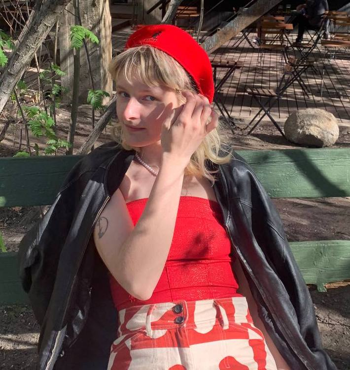

Tania Tarasova

Summary
Anthropologist | Youth Worker | Newbie Web Developer
Here you can find out more about me!
EDUCATION
Tallinn University
BA Anthropology
Minor — Russian Philology; Japanese Studies
Bachelor thesis — Autoethnography as observation method in egg cell donation
process
Tallinn University
BA Russian Philology
Greenwich Community College
ESOL course
Tallinna 53.keskkool
Tallinna Tõnismäe Reaalkool
OTHER ACHIEVEMENTS
- Honorable Mention of Student Zine Competition on “Post-extractivist legacies and landscapes: Humanities, artistic and activist responses”; UCD Humanities Institute, July 2023
- Honorable Mention of 2023 Global Voices Essay Contest; Michigan State University, June 2023
- BUP Student Conference; Kaunas, Lithuania, May 2023
- Ethnofictional filmmaking workshop “Love the Future – The Future of Love” led
by the professor Martin Gruber; Riga, Latvia, April 2023
- Erasmus + Training Course "RECONNECT and EVOLVE – mindfulness tools in youth work"; Aparan, Armenia, March - April 2023
Ethnological Autumn School of Tartu Nefa Rühma ,Turgi Käsitöö talu, September 2022
- Camp Counselor Training
(Laagrikasvataja ja-juhataja osakutse, Tase 6)
Tallinna Haridusamet, Estonia, 2022 - present
- Collectively Creating Comics: Ethno-Graphic Storytelling and/as Teamwork Workshop, Cologne, Germany, January 26, 2022
- Summer School of Slavonic (Czech) Studies, Masaryk University, Brno, Czech Republic, July - August 2021
WORK EXPERIENCE
Äkki MTÜ
Intern
Majorel OÜ
Booking.com Customer Support Specialist
Acnielsen Eesti OÜ
Market research interviewer
Other work. Especially customer service.
- Mcdonalds — Cashier
- Hesburger — Cashier
- Stockmann — Cashier
- Drink and Draw – Model
- ERR — Episodic Actress
- Mustamäe Turg — Strawberry Seller
Volunteering
- Tallinn Music Week Festival
- Tallinn Black Nights Film Festival
- ISU World Junior Figure Skating Championship
- Tallinna Skautide Rühm Tiigrid
SKILLS
Languages
Russian Native Speaker
Japanese A2
English C1
Estonian B2
IT
Notion
Figma
Microsoft Word
Power Point
Google Workspace
Slack
Zoom
Discord
HTML Intermediate
Other Skills
Audio and video transcription
Audio editing
Project Management
Academic Writing
Interviewing
Creative Writing
Soft skills
Contact Me